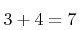
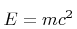

Updates
Ich habe nach einer Möglichkeit gesucht, meine eigene Webseite zu gestalten. Nach einiger Überlegung und ein paar Versuchen mußte ich feststellen, daß ich mich mit keiner der ausprobierten Varianten glücklich fühlte - also ran ans Zeichenbrett und was eigenes geschaffen!
Inspirieren ließ ich mich von dieser Webseite, unter der das schöne Motto prangt: "Proudly made without PHP, Java, Perl, MySQL and Postgres" Das fasst hevorragend zusammen, was auch mich umtrieb. Nur - HTML von Hand schreiben ist etwas, das ich noch nie gerne getan habe. Dazu kommt noch, daß es dort keine (mir bekannte) vernünftige Form von include gibt. Das bedeutet, daß wenn sich das Menü ändert, jede einzelne Seite wieder angefasst werden muss. Das hatte ich in der Anfangszeit unserer ehemaligen Firma schon einmal und habe mir damals geschworen: "Nie wieder!"
Daher erinnerte ich mich an etwas, das ich ganz am Anfang meiner Berufsausbildung kennenlernen durfte: Damals - es war kurz nach der Wende - war alles, was fortschrittliche EDV war, noch neu für uns: die Abteilung, in der ich lernte, hatte einen PC und darauf war eine Textverarbeitung installiert. Wie sie hieß, weiß ich heute nicht mehr - ich weiß nur noch, daß es dort sogenannte "Punkt-Befehle" gab. Aus heutiger Sicht würde man das Markup nennen. Marketingsprech wäre wahrscheinlich "Domain-Specific-Language"
Also entschloß ich mich zu folgender Lösung: Die Artikel werden in einfachen Textdateien geschrieben - sie dürfen HTML-Markup enthalten, müssen aber nicht. Es existiert eine Handvoll Punkt-Befehle, die die Struktur des Dokuments definieren. Dazu existiert ein Programm, das diese Dokumente einliest und über Velocity-Templates die HTML-Seiten erzeugt. Die HTML-Seiten werden als letzter Teil des Erzeugungsprozesses schließlich mit den Bildern, CSS- und JavaScript-Dateien und sonstigen Ressourcen in ein Verzeichnis geschrieben, das ohne weitere Änderungen direkt auf einen HTTP-Server kopiert werden kann.
Das, was dabei herausgekommen ist, sehen Sie gerade vor sich. Das System unterstützt das Taggen der Artikel, eine zeitliche Übersicht nach Monaten oder Kalenderwochen und eine Gruppierung der Artikel nach Tags. Es existiert die Möglichkeit, Artikel als zukünftig zu markieren - damit tauchen nur Titel und Abstrakt in der Webseite auf, der Inhalt bleibt noch verborgen.
Aktualisierung vom 28. Juni 2013
Als neue Punkt-Befehle wurden zwei Erweiterungen implementiert: einerseits ist es nun möglich geworden, Dateien zu includieren - das bedeutet, daß man nach dem entsprechenden Befehl einen Dateinamen relativ zu dem Verzeichnis des Artikels, der die Direktive enthält angibt. Dann wird diese Direktive im Ergebnis unterdrückt und statt dessen der Inhalt der referenzierten Datei eingefügt. Das funktioniert auch hierarchisch (Artikel1 includiert Artikel2, der wiederum includiert Artikel3 ...) Weiterhin wurde eine neue Direktive geschaffen, die verhindert daß der Artikel, in dem sie auftaucht, Teil der Webseite wird.
Aktualisierung vom 6. Juli 2013
Aktualisierung vom 16. Juli 2013
Aktualisierung vom 24. August 2013
Aktualisierung vom 19. Oktober 2013
Aktualisierung vom 3. November 2013
Aktualisierung vom 22. Dezember 2013
Aktualisierung vom 30. Dezember 2013
Links, die auf diese Weise definiert werden, werden nicht im Fließtext der erzeugten Seite integriert, sondern stehen zum Zeitpunkt der Expansion des Templates für Artikel als Collection (Liste) zur Verfügung, so daß sie gemeinschaftlich formatiert werden können.
Aktualisierung vom 30. Januar 2014
Zwischen den einzelnen Direktiven für Seitenumbrüche dürfen alle Direktiven stehen, die in den Artikeln auch sonst erlaubt sind. Folgende Direktiven bilden eine Ausnahme - sie sind nur einmal im Dokument erlaubt und beziehen sich immer auf den Artikel als Ganzes:
- .TAGS
- .CREATED
- .PUBLISHED
- .FUTURE
- .HIDDEN
- .URL
Aktualisierung vom 1. Juli 2014


Dazu fügt man einfach den betreffenden TeX-Code zwischen .FORMULA und .FORMULAEND ein (nur die Mathematik, ohne Dokumentenstruktur) - Beispiel:.formula E=mc^2 .formulaend
Aktualisierung vom 20. Oktober 2014
Aktualisierung vom 22. Dezember 2014
Aktualisierung vom 3. Februar 2016